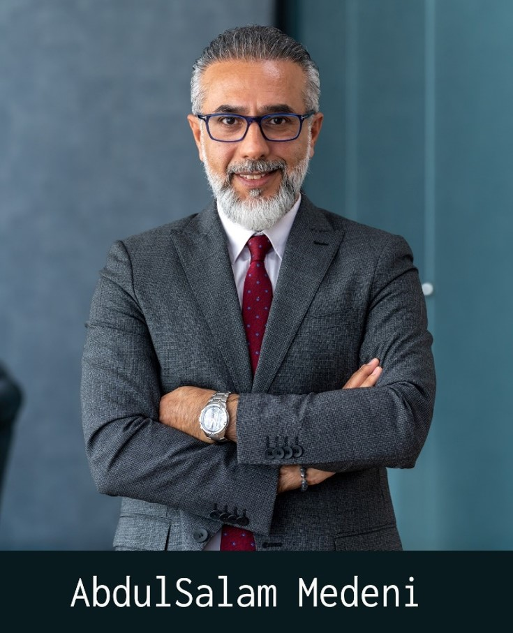

AbdulSalam Medeni, a civil engineer, dedicated his efforts during the nineties to collaborating with UN agencies and international NGOs in the reconstruction of Iraqi Kurdistan following years of war and genocide campaigns. Subsequently, he transitioned his acquired knowledge to the younger generation through the Rwanga Foundation www.rwanga.org as Chief Executive Director since 2015. Leading the University of Kurdistan during a period of transformation in 2019-2020 and now he is a Governing Board member in the university. He has a strong focus on training leaders through leadership programs in MENA region. Widely recognized in the region for his adeptness in facilitating the transition of young graduates into the job market through innovative initiatives.
Salam is also an author. He has written five books (Youth Problems); (Modernity, its Origin and Associations); (What is Terrorism); (Ten Pulses, Dialogue between Babel and Erbil) it is on coexistence; (How to design and deliver training with impact, co - author); (A training manual on “leadership and management” for NGOs); (A main reviewer of training manual on “Citizenship and coexistence” for Iraqi youth).
In addition, he has more than 700 articles in local Iraqi and international newspapers and magazines about developing democracy, civil society and developing leadership skills. He also served as a lecturer at multiple universities in Iraq and had his own TV and radio shows.
Salam served as an adviser for the Deputy Prime Minister of Kurdistan Regional Government on Civil Society and Youth issues.
People know Salam as, AbdulSalam Medeni, the pseudonym that he used as a writer and lecturer.
Salam will be our keynote speaker at SU-ICEIT2026.
His Social media platforms are the below:
@AbdulSalam.Medeni
facebook
YouTube